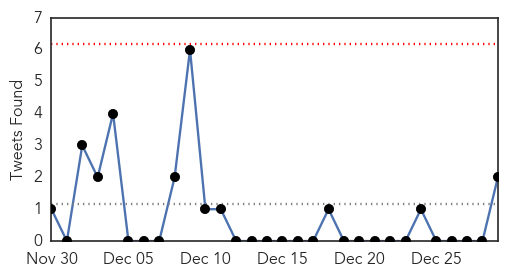
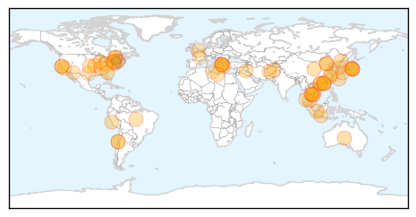

30 Day Trends
Web: 0 alerts, 0 warnings
Twitter: 0 alerts, 0 warnings
Top Articles:
- 0.997
- Bad flu season could be result of less effective vaccine
- 0.989
- Number of Shigellosis Infections Among San Francisco’s Homeless People on the Rise
- 0.979
- Grand Junction VA closes community living center amid flu outbreak
- 0.978
- Man dies of avian flu in China; HK on alert
- 0.977
- Despite pleas to stay home, Montrealers flood emergency rooms as the flu arrives early
- 0.977
- HK on alert for H7N9 avian flu virus- China.org.cn
- 0.971
- She got sick with the flu on her 37th birthday, and after Christmas, she was dead
- 0.969
- Japan Culls 42,000 Chickens After Second Bird Flu Outbreak In A Month
- 0.945
- Pediatric flu deaths in Tenn. double from last year, Knoxville doctors offer advice
- 0.942
- Signs and Symptoms of Pneumonia
- 0.937
- China bird flu death reported
- 0.937
- First Case of Deadly Avian Flu in Hong Kong
- 0.934
- Hong Kong Raises Bird Flu Alert Level as Woman Critical
- 0.933
- China bird flu death reported as 2014 toll rises
- 0.931
- Hong Kong raises bird flu alert level as woman critical
- 0.930
- China bird flu death reported as 2014 toll rises, East Asia News & Top Stories
- 0.926
- Flu in Washington County
- 0.917
- Chicago Tribune
- 0.917
- Chicago Tribune
- 0.917
- Chicago Tribune
- 0.917
- Chicago Tribune
- 0.917
- Chicago Tribune
- 0.917
- Chicago Tribune
- 0.917
- Chicago Tribune
- 0.917
- Chicago Tribune
- 0.917
- Chicago Tribune
- 0.917
- Chicago Tribune
- 0.917
- Chicago Tribune
- 0.917
- Chicago Tribune
- 0.917
- Chicago Tribune
- 0.917
- Chicago Tribune
- 0.917
- Chicago Tribune
- 0.917
- Chicago Tribune
- 0.910
- The world windows to Thailand
- 0.884
- Man dies in Yongkang of H7N9 bird flu
- 0.883
- KRNV, Reno, NV
- 0.883
- KRNV, Reno, NV
- 0.880
- 201 Cambodians infected with HIV
- 0.877
- 201 villagers infected with HIV in northwest Cambodia
- 0.875
- 201 Cambodians infected with HIV
- 0.866
- Libya contracts U.S. firm to extinguish port storage tanks fire
- 0.862
- NewsDaily
- 0.862
- NewsDaily
- 0.862
- NewsDaily
- 0.854
- Developments in AirAsia tragedy
- 0.854
- Afghan war, longest for US, ending
- 0.825
- RSV season underway with more illnesses than last year
- 0.819
- Lyme disease debate leaves stricken family without answers
- 0.811
- West Suffolk Hospital brings in extra staff after ‘very busy’ Christmas is worsened by norovirus outbreak
- 0.788
- Poultry producers brace for bird flu fallout
Showing top 50 articles...
Top Tweets:
- 0.741
- RT: Qasim: 3 Northern borders: 2 Bahar: 1 Jizan & Ha'il: 0 Only includes SaudiArabia MERS CoV cases. 2/2
- 0.617
- Schumacher progresa "adecuadamente" dentro de la gravedad: Justo el día en el que se cumple un año del grave... http://t.co/t3FdN8MfPJ
- 0.531
- Platini sin oposición en la UEFA y será reelecto en marzo del 2015: Hasta el momento sólo se ha anunciado un... http://t.co/GYKrCsYobB
- 0.529
- navidad en el tropico üêö‚òÄÔ∏èüåäüëôüëì
- 0.515
- Do we know how many H7N9 flu cases there have been? @WHO tallies H5N1 (676 cases, 398 deaths as of Dec 4) but never see H7 tally. Why?
Web/News Articles

Tweets
Article Locations
Article Confidences